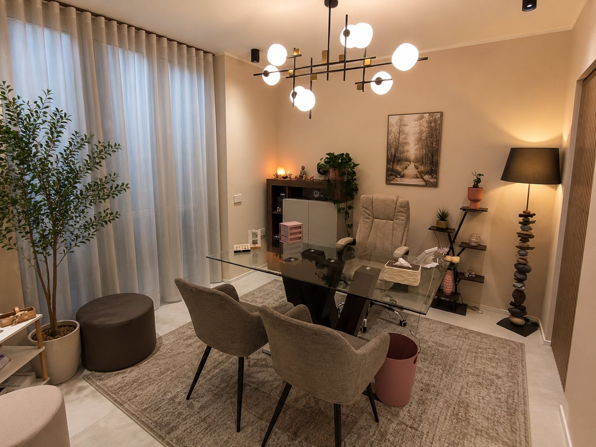

Incontro
Burnout
Capirlo e superarlo
Quando il lavoro consuma le energie: segnali, cause e strategie per ritrovare equilibrio.
Aziende e professionisti
Dott.ssa Simona Cappello
Un percorso psicologico può aiutarti a dare significato a ciò che stai vivendo, ad affrontare momenti di difficoltà e a ritrovare nuove possibilità di equilibrio e benessere.
Per adulti, coppie, genitori, adolescenti e neo-mamme. In studio a Pregnana Milanese e online.
Sono pensieri che sento spesso nel mio studio. Tocca quella che ti somiglia di più per scoprire come posso aiutarti.
Forse quello che stai vivendo non è in nessuna di queste frasi: non serve dargli un nome per meritare ascolto. Se è un momento difficile, concederti uno spazio per te è già un primo passo. E quando te la sentirai, io ci sono.
Scrivimi su WhatsApp"Non devi avere già le parole giuste. Le cerchiamo insieme."
Chi sono
Se sei qui, forse stai vivendo un momento in cui qualcosa non torna più come prima. Lo conosco, quel momento.
C'è stato un tempo in cui, vista da fuori, la mia vita andava bene. Sono ingegnera, e in azienda avevo costruito una carriera che mi dava soddisfazione: sono diventata manager, ho accompagnato come coach manager e professionisti, e nelle risorse umane mi sono presa cura della selezione e del benessere delle persone. A pensarci oggi, il filo c'era già: anche da ingegnera, la parte del lavoro che amavo di più erano le persone. Intanto era arrivata una bambina, c'erano una casa, gli amici. Eppure dentro di me una voce mi diceva che stavo lasciando indietro qualcosa di importante: la passione per la psicologia che avevo fin da ragazzina.
Così mi sono iscritta a Psicologia. Non è stato semplice tenere insieme il lavoro, una figlia piccola e gli esami. E proprio in quegli anni sono arrivate anche diverse diagnosi, di quelle con cui si impara a convivere. Ho conosciuto l'ansia, la stanchezza, la paura, la sensazione di non riconoscermi più.
Ci sono stati momenti in cui ho pensato di fermarmi. Ho continuato con i miei tempi, e proprio quell'esperienza mi ha mostrato ancora più chiaramente la direzione: stare accanto alle persone nei loro momenti più fragili, con la stessa delicatezza che avrei voluto trovare io.
Oggi, nel mio studio di Pregnana Milanese oppure online, ti offro proprio questo: un luogo in cui puoi arrivare così come sei, senza dover spiegare tutto subito, e in cui nessuno ti giudicherà.
E da lì, un passo alla volta, lavoriamo insieme: per capire cosa sta succedendo, ritrovare le tue risorse e costruire un nuovo equilibrio. Con un obiettivo semplice e importante: tornare a stare bene con te e a vivere la tua vita con più serenità.
Simona
Dott.ssa Simona Cappello, psicologa iscritta all'Ordine degli Psicologi della Lombardia n. 29185
Di cosa mi occupo
Offro supporto psicologico rivolto ad adulti, coppie, genitori, adolescenti e donne in particolari fasi di vita.
Per momenti di difficoltà emotiva, ansia, stress, senso di blocco, cambiamenti di vita, fragilità relazionali o bisogno di maggiore consapevolezza.
Scopri di piùUno spazio per comprendere dinamiche, fatiche comunicative, distanza emotiva e momenti di crisi all'interno della relazione.
Scopri di piùPer accompagnare i genitori nella comprensione dei bisogni dei figli e delle difficoltà educative o relazionali.
Scopri di piùUno spazio di ascolto dedicato ai ragazzi, per affrontare fragilità, vissuti emotivi, difficoltà relazionali e momenti delicati della crescita.
Scopri di piùPer accogliere dubbi, cambiamenti, fatiche e vissuti emotivi legati alla maternità e alla ridefinizione di sé.
Scopri di piùUno spazio per chi convive con una malattia cronica, e per chi gli sta accanto, per dare voce a ciò che la malattia porta con sé.
Scopri di piùUno spazio sicuro e senza giudizio per parlare di sessualità, desiderio, orientamento sessuale e identità di genere.
Scopri di piùPer chi sente che il cibo è diventato fonte di fatica, senso di colpa o preoccupazione: fame emotiva, abbuffate, diete continue, immagine corporea.
Scopri di piùPercorsi mirati per chi desidera fare chiarezza in una fase di cambiamento personale o professionale, o vive lo stress del lavoro.
Scopri di piùNon sai quale scegliere? Non serve saperlo prima: lo capiamo insieme nel primo colloquio.
Scrivimi due righeOrientamento cognitivo post-razionalista
Ogni persona arriva con una storia e un bisogno diversi, e il percorso si adatta a te. Ci sono però alcune cose che troverai sempre, qualunque cosa tu stia vivendo.
Non ho un programma uguale per tutti. Partiamo da quello che porti tu, oggi, e costruiamo il percorso su di te, sulla tua storia e su ciò di cui hai bisogno.
Non parlerai nel vuoto mentre io ascolto in silenzio. È un dialogo vero: ti faccio domande, ti restituisco quello che vedo, ti propongo spunti. E tu puoi sempre dirmi cosa ti serve e cosa no.
Non devi raccontare tutto subito, né partire dall'inizio. Puoi cominciare da quello che senti più urgente: il resto arriverà quando te la sentirai.
Ogni incontro ha uno scopo: capire meglio cosa sta succedendo e trovare insieme modi nuovi per affrontarlo nella vita di tutti i giorni, anche con strumenti pratici quando servono.
Il mio orientamento è cognitivo post-razionalista: in parole semplici, cerco di capire insieme a te il senso di ciò che provi, per aiutarti a ritrovare un equilibrio che sia davvero tuo. Approfondisci il mio approccio
Il primo colloquio
Fare il primo passo è spesso la parte più difficile. Per questo provo a renderlo semplice.
Prenoti su MioDottore, mi scrivi su WhatsApp o compili il modulo di contatto. Ti rispondo per fissare un orario.
In studio oppure online. Mi racconti cosa ti porta da me, con i tuoi tempi. Non serve preparare nulla.
Ti accorgerai subito se è il posto giusto per te. Se deciderai di continuare, definiamo insieme frequenza e obiettivi.
Recensioni
Le recensioni sono scritte spontaneamente da chi ha fatto un percorso con me e sono pubblicate su piattaforme esterne, dove puoi leggerle tutte.
Tariffe
Sapere quanto costa un percorso aiuta a decidere con serenità.
70 €
100 €
60 €
Detraibili. Le prestazioni psicologiche sono spese sanitarie detraibili nella dichiarazione dei redditi, se pagate con metodi tracciabili. Rilascio sempre fattura.
Pagamento con bonifico, carta, Satispay o PayPal. È possibile pagare anche in contanti, ma in questo caso la prestazione non è detraibile.
Dove ricevo
Ricevo a Pregnana Milanese, in uno spazio pensato per offrire riservatezza, tranquillità e accoglienza.
Lo studio si trova in via Cornaredo, a soli 4 minuti da Cornaredo, ed è facilmente raggiungibile anche da Settimo Milanese, Vighignolo, Rho, Bareggio, Vanzago e Arluno, con parcheggio e fermata dell'autobus proprio davanti. È pensato come un luogo in cui la persona possa sentirsi al sicuro, libera di portare sé stessa e la propria storia.

Incontri e workshop
Organizzo incontri in piccoli gruppi nel mio studio, anche per mamme con i loro bambini, e li propongo ad aziende, scuole e associazioni: burnout, ansia, emozioni, rapporto con il cibo e altri temi legati al benessere psicologico. Nel 2025 sono stata anche ospite di Story Time su Radio Canale Italia, per parlare di cambiamento.
Capirlo e superarlo
Quando il lavoro consuma le energie: segnali, cause e strategie per ritrovare equilibrio.
Aziende e professionisti
Dott.ssa Simona Cappello
Conoscerla per gestirla
Cos'è l'ansia, perché arriva e come imparare ad ascoltarla senza esserne travolti.
Adulti e gruppi
Dott.ssa Simona Cappello
Riconoscerle, nominarle, viverle
Un incontro per imparare a dare un nome a ciò che proviamo e a farne una risorsa.
Adulti, scuole e associazioni
Dott.ssa Simona Cappello
Quando il cibo parla delle emozioni
Il legame tra cibo, emozioni e corpo, e come costruire un rapporto più sereno con l'alimentazione.
Adulti e gruppi
Dott.ssa Simona Cappello
Primo colloquio
Se senti il bisogno di un luogo in cui fermarti, comprenderti e affrontare con maggiore chiarezza ciò che stai vivendo, puoi contattarmi per un primo colloquio.
Preferisci parlarne prima? Chiamami o scrivimi al +39 347 051 5781: rispondo personalmente.